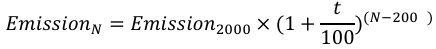
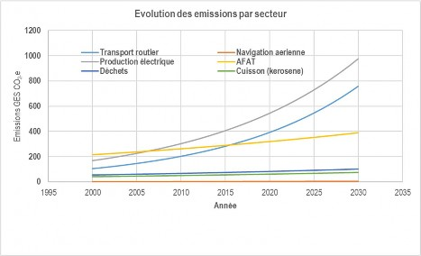
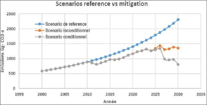

Revised version November 2025
The Republic of Djibouti, fully aware of its particular vulnerability to the adverse effects of climate change and assuming its responsibilities as a Party to the Paris Agreement, reaffirms solemnly pledged its commitment to contribute actively and resolutely to the global collective effort aimed at to keep the rise in the planet's average temperature well below 2°C, and to pursue the ambition to limit it to 1.5°C compared to pre-industrial levels.
It is in this spirit of shared responsibility that Djibouti presents its Determined Contribution at the level National (NDC) revised for the period 2024–2030. This revision reflects a strengthened national ambition, with a the target for reducing greenhouse gas emissions has been raised from 60% to 65% by 2030 compared to reference scenario. This commitment illustrates Djibouti's desire to situate its development within a a low-carbon, innovative and resilient trajectory, while consolidating its role as a responsible actor on the international scene.
The envisaged mitigation measures are based on three strategic sectors: energy development renewables to diversify the energy mix and reduce dependence on fossil fuels, the promotion of sustainable agricultural, forestry and land management practices to enhance carbon sequestration, as well as the implementation of integrated solutions in the waste sector, focused on reduction, recovery and recycling. These choices demonstrate a commitment to reconciling economic growth and transition energy and environmental preservation.
However, for a country with limited natural resources and highly exposed to climate hazards , Adaptation is an absolute national priority . The revised NDC places the reduction of vulnerability and the strengthening of resilience at the heart of its ambition. populations, the economy, and ecosystems. The revised NDC places particular emphasis on agriculture. and livestock farming, essential to food security and livelihoods, on water resources, including Scarcity represents a major structural challenge, particularly in coastal areas, which are essential pillars of the economic, social and environmental development of the country.
Fulfilling these commitments requires considerable investments, estimated at $2.62 billion. Americans for the period 2024–2030. These needs far exceed the financial capacity of the Djiboutian state. Their mobilization will depend on strengthened international cooperation and increased access to climate finance mechanisms.
This NDC is a continuation of the Djibouti Vision 2035 and the National Development Plan, which place sustainability, resilience and innovation at the heart of climate policies. It reflects the commitment a strong national force to ensure environmental protection and guarantee the safety and well-being of the population by driving a profound and lasting modernization of our economic model. It also constitutes a call solemn appeal to the international community, in order to mobilize funding, technologies and know-how necessary to transform this ambition into concrete, measurable and sustainable actions.
The Republic of Djibouti thus reaffirms its unwavering commitment to the principle of shared responsibilities but differentiated and with respective capacities, the cornerstone of the Paris Agreement. She expresses her conviction that only strengthened cooperation, based on trust and solidarity, will make it possible to meet the challenge climate and to pave the way for a safer, fairer and more prosperous future for all humanity.
On behalf of the Government of the Republic of Djibouti, I invite our bilateral and multilateral partners, our financial institutions, the private sector and all civil society actors to join this collective effort. Together, we have the duty and the capacity to transform the climate threat into a a historic opportunity to build a sustainable, resilient world full of hope for present and future generations and futures.
MOHAMED ABOULKADER MOUSSA
Minister of the Environment and Sustainable Development
Abbreviations and Acronyms
ADME |
Djiboutian Agency for Energy Management |
|
AFAT/AFOLU |
Agriculture, Forestry, Land Use/Agriculture, Forestry and Other Land Use |
AFD |
French Development Agency |
ANCR |
National Self-Assessment of Capacities to be Strengthened |
ANM |
National Meteorological Agency of Djibouti |
AP |
Paris Agreement |
ARMD |
Djibouti Multisectoral Regulatory Authority |
BAD |
African Development Bank |
BaU/CNA |
Business as Usual/Normal Business Course |
BM |
World Bank |
BRT |
Rapid transit bus |
CC |
Climate Change |
CCCD |
Cross-cutting capacity development project |
UNFCCC |
United Nations Framework Convention on Climate Change |
CDNCC |
National Steering Committee on Climate Change |
CDNs |
Nationally Determined Contributions |
CNDCC |
National Steering Committee on Climate Change |
CoP |
Conference of the Parties |
CPDN |
Nationally Determined Contribution |
DESV |
Directorate of Livestock and Veterinary Services |
HR |
Rural Hydraulics Directorate |
DSRP |
Poverty Reduction Strategy Paper |
EDD |
Electricity of Djibouti |
EEPCO |
Ethiopian Electric Power Corporation |
FADES |
Arab Fund for Social Development |
Fdj |
Djibouti francs |
FEM |
Global Environment Facility |
IMF |
International Monetary Fund |
GACMO |
Greenhouse gas abatement cost model |
GCF |
Green Climate Fund |
GEF |
Global Environment Facility |
GES |
Greenhouse Gases |
IPCC |
Intergovernmental Panel on Climate Change |
GoD |
Government of Djibouti |
GRC |
Risk and Disaster Management |
HERE |
Inclusion, Connectivity and Infrastructure |
IDH |
Human Development Index |
IGAD |
Intergovernmental Authority on Development |
INDS |
National Initiative for Social Development |
CNFI/INFF |
Integrated National Financing Framework |
INSTAD |
National Institute of Statistics of Djibouti |
JICA |
Japan International Cooperation Agency |
KP |
Kyoto protocol |
|
MAEM-RH |
Ministry of Agriculture, Livestock and the Sea in charge of Water Resources |
MASS |
Ministry of Social Affairs and Solidarity |
MEDD |
Ministry of the Environment and Sustainable Development |
MERN |
Ministry of Energy, in charge of Natural Resources |
MHUE |
Ministry of Housing, Urban Planning and the Environment |
ODDEG |
Djiboutian Office for Geothermal Energy Development |
ONEAD |
National Water and Sanitation Office of Djibouti |
UN |
United Nations |
PAN |
National Action Plan to Combat Desertification |
PANA |
National Action Plan for Adaptation to Climate Change |
PAP |
Agro-Pastoral Areas |
PAT |
Technology Action Plan |
GDP |
Interior Product But |
PIUP |
Industrial Process and Use of Products |
Assisted Reproductive Technology |
Least Developed Countries |
PNAEPA |
National Drinking Water Supply and Sanitation Program |
PND |
National Development Plan |
PNSA |
National Food Security Program |
UNDP |
United Nations Development Programme |
PNUE |
United Nations Environment Programme |
PRG |
Global Warming Potential |
PTF |
Technical and Financial Partner |
PV |
Photovoltaic |
RCP8.5 |
Representative Concentration Pathway |
RDD |
Republic of Djibouti |
RGPH |
General Population and Housing Census |
SCAPE |
Accelerated Growth Strategy and Job Creation Promotion |
SNCC |
National Climate Change Strategy |
SNPS |
National Social Protection Strategy |
US |
United States of America |
USD |
United States of America Dollars |
Chemical formulas, units and emission factors
CHEMICAL FORMULAS
CO2: Carbon dioxide CH4: Methane
N2O: Nitrous oxide
VOCs: Volatile Organic Compounds
UNITS AND MULTIPLICATION FACTOR
TJ: terajoules (= 10⁹ kJ) kWh: kilowatt-hour
MWh: Megawatt-hour GWh: Giga-Whthour
kTOE: kilotonne of oil equivalent
Gg CO2: Gigagram = 1000000000 gram or 1000 kTonne kt: kiloton (= 1000 ton)
Ha: Hectare
PROPERTY CONDITIONS
National overview: geography, population and climate setting
The Republic of Djibouti, located at the strategic junction of the Red Sea and the Gulf of Aden, covers 23,200 km² and shares land borders with Eritrea, Ethiopia and Somalia, as well as maritime borders opposite the Yemen. Administratively, the country consists of the capital Djibouti City, divided into three communes, and of five regions: Arta, Ali-Sabieh, Dikhil, Obock and Tadjourah. Its population is 1,066,809 inhabitants, of which 70.6% live in urban areas and more than half in the capital. Djibouti is a young country, with 73% of the The population is under 35 years old. The climate is arid with low and irregular rainfall (135 mm/year). and high temperatures, making the country particularly vulnerable to recurring droughts and flash floods. Despite these constraints, Djibouti has a varied landscape of mountains and plains, 372 km of the coast – and notable biodiversity with over 1,400 animal species and 840 plant species, although threatened by human pressure and climate change. Groundwater is the only resource significant water resources, which has prompted the country to invest in the mobilization and control of rainwater.
In this context, Djibouti has made the fight against climate change a national priority. Signatory As a signatory to the UNFCCC since 1995, the country has implemented ambitious adaptation and resilience policies. in particular through its National Adaptation Action Programme (2006), its Vision 2035, the SCAPE and its Nationally Determined Contributions, in which it commits to reducing its greenhouse gas emissions by 40% greenhouse effect by 2030 and to strengthen protection against drought, rising sea levels, loss of biodiversity and the vulnerability of rural populations. To achieve these objectives, an institutional framework is needed. A structured framework has been put in place, including the Ministry of the Environment and Sustainable Development (MEDD), the The National Committee on Climate Change, the National Commission for Sustainable Development, and the Coordination of NDCs, in order to ensure the planning, management and implementation of climate policies of the country.
MITIGATION
Reference point
The reference year is 2000, with the implementation period running from 2024 to 2030.
Scope and scope of mitigation measures
The target in relation to the reference indicator is a 65% reduction distributed between two (02) scenarios. to know the unconditional scenario at 41.30% and the conditional scenario at 23.70%. Looking ahead By 2030, the reduction will be 1500 Gg CO2-e for both scenarios combined. The reduction actions are distributed across the country's three key sectors, namely the Energy Sector, the Agriculture, Forestry and Other Land Uses and the Waste Sector. Only three direct Greenhouse Gases (GHGs) are concerned: Carbon dioxide (CO2), methane (CH4) and nitrogen oxide (N2O). The modeling covers the GHG emissions attributable to human activities stemming from the Djiboutian economy covering the entire national territory of Djibouti in accordance with the guidelines of the Intergovernmental Group of Experts on climate change (IPCC).
Mitigation Component Planning Process
The review of the CDNs is conducted through a participatory approach that involves all stakeholders to the process. Stakeholder consultation workshops were organized to define the overall framework of review of the CDNs, present the current state of implementation of the initial CDNs, develop the options mitigation strategies, including their costs and reduction potential, and identifying priority sectors and options. development. The planning for the mitigation component incorporated the literature review and the methodological review for the choice of hypotheses and data analysis tools, data collection and processing, the modeling and QA/QC and verification activities.
Hypotheses and methodology
The emissions from the reference year 2000 are updated in the BUR 2023 with the improved version of the Lines Directors of the IPCC and IPCC2006 Software. Update data is from policy documents of the country. Djibouti's aggregate GHG emissions were approximately 588.5 Gg CO2-e in 2000 (DCN) and were distributed across the Energy, Agriculture, and Waste sectors. The IPCC's default parameters are used for estimates of CO2, CH4, N2O emissions and GWPs are those of AR5. For the review of Djibouti's CDNs, the GACMO tool was used for option analysis. GHG mitigation, namely the BaU scenario and mitigation scenarios.
Contribution of mitigation efforts
Emissions under the BaU scenario by 2030 are estimated at 2,305 Gg CO2-e (Figure 2). The two Unconditional and conditional scenarios will allow the Republic of Djibouti to raise its ambition in 41.3% support climate action in the event of international support for capacity building and funding. The overall cost of the two mitigation scenarios is approximately USD 1.208 billion and divided between the unconditional scenario (USD 549.42 Million) and the conditional scenario (USD 658.32 Million).
Equity, justice, and ambition
Implementing these options will have a positive impact not only on emissions and the environment but could also translate into considerable economic benefits such as job creation, the training, reducing energy bills for households and businesses.
ADAPTATION
Djibouti's vulnerability to climate change
Djibouti has an arid tropical climate where temperatures and evaporation are high and rainfall weak and very irregular. The country's maritime waters will experience significant warming in the future. In terms of the duration of extreme heat, the number of heatwave days averages 21 days per year across the entire country. of the country with an increase of about 8 days of heat waves per decade. Already, rainfall is rare, irregular and can occur at any time of year with an annual average of 134.7 mm/year. The temperature will increase to reach 1.2°C and 2.1°C respectively in 2030 and 2050 by report to available data. Current climatic conditions, the state and sensitivity of systems and the low adaptive capacity lead to high levels of vulnerability to climate change for water resources, livestock farming as well as agriculture.
Climate impacts and risks
The main risks of natural disasters to which the Djiboutian population is exposed are the drought, floods, earthquakes, strong winds accompanying storms, fires and Cyclones. Recent climatic events over the past ten years concern the drought - a periodic phenomenon considered "almost normal" given its irregularity and low Rainfall, flooding, and cyclones Sagar and Pawan. The increase in heat waves has clearly had an impact on human health, particularly that of children and the elderly, on livestock, on the agricultural production ultimately has a significant economic impact (decreased productivity, increased...) mortality, infrastructure deterioration, increased frequency of extreme events, rising number of harmful organisms and invasive species). And in the long term, coastal areas including Djibouti City could become uninhabitable for humans. On a social level, the impact of climate change weakens The situation of women in rural areas is even more dire, with the increase in their workload due in particular to... to the increasingly long distances to be covered in search of water and firewood, pastures in addition to preparing family meals, childcare, and household hygiene. According to the Based on available projections, the current effects of climate change will intensify, leading on the one hand to land degradation and the impoverishment of livestock farmers and small-scale farmers, and on the other hand the probability of Cyclones. The country has already experienced Cyclone Sagar and Cyclone Pwan. These rural residents, having lost their livelihoods, are at risk to expand the outskirts of the capital and regional capitals.
Key information about adaptation
The actions targeted by the Adaptation Component of the NDCs aim to reduce vulnerability and increase the resilience of local communities, national actors and priority sectors identified in the horizon 2030. All the measures aim to make populations less dependent on resources impacted by climate change and to improve their living conditions by combating, in particular, against poverty. The commitments will involve all stakeholders and will take gender and other factors into account. economic regions of the country. The priority sectors are: (i) agriculture, including the production of animal, plant, and fisheries resources; (ii) water resources essential to the agricultural sector; (iii) the coastal areas. The various adaptation measures have co-benefits which result in an increase in carbon sequestration potential, rational management of wastewater and organic matter in agriculture, and the restoration of degraded land with positive impacts on the nutritional status of livestock and on biological diversity.
Adaptation Component Planning Process
The planning for the adaptation component is based on existing policies and strategies regarding climate change, as well as institutional arrangements and legal frameworks put in place, and that it is necessary improve.
Hypotheses
The effective and timely mobilization of national resources and the expected aid from the community International cooperation is a determining factor in the implementation of adaptation measures. The overall cost The adaptation cost is in the order of USD 1.405 billion and is divided between the unconditional scenario (468.44 Millions of USD) and the conditional scenario (936.62 Million USD). Difficulties in mobilizing resources Sufficient resources could hinder project implementation. The adaptation effort will depend on capacity. the relevant public structures to effectively manage the programs, the effectiveness of the implementation of regulatory texts and control of the national equipment market, the capacity of the agricultural sector to to effectively promote improved farming techniques on the planned areas, the effectiveness of the technology transfer and rigorous monitoring of a master plan for the implementation of CDNs-R.
Contribution of adaptation efforts
As a Least Developed Country, the Republic of Djibouti is committed to reducing its emissions without impacting its economic and social development, while reaffirming its commitment to the principle of collective but differentiated responsibility. The Republic of Djibouti, by implementing the component Adapting its NDCs contributes to achieving the SDGs and to the realization of the Paris Agreement, which aims to keeping global warming below 2°C or even 1.5°C.
MECHANISMS AND MEANS OF IMPLEMENTING CDNs
CDN Implementation Strategy
The mobilization of financial resources is crucial to enabling the Republic of Djibouti to to implement its climate commitments within the framework of its NDCs. In accordance with the principles of the National Climate Framework Integrated Financing (INFF) will require financing to draw on both domestic public resources and on Official Development Assistance, which remains essential to support mitigation actions and adaptation. In addition, private funding—both national and international—represents an opportunity major to accelerate the deployment of clean technologies, support the resilience of populations and strengthen investments in climate infrastructure. Foreign direct investment, loans, the Equity funds and other financial instruments can thus contribute significantly to the implementation of the NDC priorities. With this in mind, Djibouti has strengthened its legal framework and regulatory, particularly regarding public-private partnerships, which constitute a dynamic lever and promising for financing some of the country's strategic climate projects.
CDN Implementation and Monitoring Plan
The implementation plan will take into account both the mitigation and adaptation plans.
Means of implementation
Djibouti needs technological and financial support to implement the climate actions contained therein. in its revised NDC. Overall, the cost of implementing Djibouti's revised NDC amounts to approximately 2.62 billions of USD. The costs of the different options are as follows:
Chapter 1: Specific Conditions
1.1 Geographical location and administrative regions
With an area of 23,200 km2, the Republic of Djibouti, a member of the sub-region of Africa The East has both continental borders (with Eritrea, Ethiopia and Somalia) and maritime borders (opposite Yemen). Administratively, the country comprises the capital, Djibouti City, composed of three communes, and five regions: Arta, Ali-Sabieh, Dikhil, Obock and Tadjourah.
1.2 Demographics and economic situation
1.2.1 Demographic Structure
Djibouti has a total population of 1,066,809 inhabitants according to the latest general census of the population (RGPGH-3). Young people represent a very large segment of the population with 73 % of its population is under 35 years old. In terms of population distribution, the middle urban areas comprise 70.6% of the total population, of which 58.1% are in the city of Djibouti alone.
1.2.2 Economic Situation
The country's economy is dominated by services (75% of GDP/year) and the contribution of the sector Primary sector remains low (3.5%). The country is ranked 171st out of 191 with a Development Index Human Development Index (HDI) of 0.509 in 2022 despite its classification among middle-income countries lower bracket (GDP per capita is US$3,150.41) and economic growth estimated at 3.7%/year (2022).
1.3 Biophysical Profile
1.3.1 Climate
The Republic of Djibouti is a country with an arid climate and low rainfall. irregular rainfall (average of 135 mm/year) and high temperatures (average 28°C). Faced with these challenges Due to climate change, the country is suffering from chronic droughts that contribute to food insecurity and... devastating floods.
1.3.2 Geology and pedology
The country has a varied landscape. In the north, there is a major mountain range that includes the massif of Goda (1750 m) with the Day forest and the Mabla massif (1380 m). To the south there are several plains (Hanle, Gobaad and Gagade). A coastal area of nearly 372 km. In terms of Soil science shows that in the country one mainly encounters in situ soils (deep brown soils derived from basalt, lithosols, coral limestone soils), and imported soils (colluviates, alluvium) (fluvio-lacustrine). Some of these soils are saline and therefore unsuitable for agricultural activities. In general, our soils are poor in organic matter.
1.3.3 Biological Resources
The Republic of Djibouti still possesses a significant biological diversity within its territory. negligible. Total terrestrial and marine biodiversity includes more than 1421 species animal and 843 plant species. However, this biodiversity is threatened by various factors primarily caused by human actions (especially with the regression of menstruation) customary) and climate change. Thus, the forest formations of the highlands are in very sharp decline, particularly junipers (Juniperus procera).
1.3.4 Water Resources
The water sub-sector is one of the country's top priorities. According to the inventory of water resources and the establishment of an inventory of resources and their current exploitation, Surface water resources (MCG, MAEP-RH): the country's watersheds are estimated to number 53 of varying sizes (area). The largest, exceeding 900 km2 (26%), are transboundary. The hydrological balance is not known for the majority of groundwater aquifers. Hence the difficulty in considering their sustainable management. The majority of rainwater drains away at through the wadis either towards the sea, or towards closed depressions (where they evaporate), and Only a tiny fraction, estimated at 5%, is likely to seep into the soil to to replenish groundwater. This groundwater constitutes
the only available but fragile resources, used for all aspects of life and Irrigation. For about ten years the country has been committed to mobilizing and controlling rainwater for the drinking water of rural people and their livestock, irrigation, and replenishment of the water tables and the protection of the capital and other coastal urban centers. To secure For the water supply, especially to the capital, the country opted for a water supply system. transboundary and seawater desalination.
1.4 National Priorities
The Republic of Djibouti acceded to the UNFCCC as soon as it was opened for signature at the Summit. Rio de Janeiro State and ratified it in July 1995. It initiated several adaptation actions to address climate change. By submitting its National Adaptation Action Programme (PANA) at the UNFCCC in 2006, he made issues related to those vulnerable to impacts a priority. of climate change in sectors such as water resources, agriculture and livestock, forestry, and coastal and marine ecosystems. A first assessment of vulnerabilities to climate change in these sectors has been addressed and several urgent adaptation actions have were identified and prioritized. In 2014, the government adopted a new framework The reference point is the 2035 vision, which sets its long-term direction. In the first Strategy of Accelerated Growth and Employment Promotion (SCAPE), adopted and constituting the medium-term version In line with the vision for 2035, the tenth objective of SCAPE focuses on adaptation to climate change and resilience building, with a focus on communities rural areas and the integration of adaptation into sectoral policies. In 2016, the country submitted its initial NDCs which reflect both its political will to participate in global reduction Greenhouse gas (GHG) emissions and the extent of its adaptation needs.
In its NDCs, the Republic of Djibouti has committed to reducing its GHG emissions by 40% by 2030, a commitment that includes the implementation of mitigation measures, the development of sustainable economic sectors and the use of renewable energies.
Reducing vulnerability to drought;
Protection against rising sea levels;
Improving access to water;
The protection of biodiversity;
Strengthening the resilience of rural populations.
On the other hand, in order to accelerate its efforts and address the increasing effects of climate change, the country intends to raise its ambitions by submitting its Revised Nationally Determined Contributions (NDCs-R) from 2023 to the UNFCCC Secretariat.
1.5 Institutional Provisions
Since 2015, the country has continued to implement numerous provisions and a legislative framework favorable to achieving its priority climate change objectives. The country has Therefore, an institutional framework composed of:
National Commission for Sustainable Development
1.5.1 Coordination of CDNs
For the Revised CDNs process, the MEDD has established a coordination mechanism and appointed a Coordinator responsible for coordinating and managing the process. The Coordinator is notably in charge of to facilitate relations between key stakeholders and consultants, to prepare all official communication, to receive and study the reports of national consultants before their submission to the CDCC.
Chapter 2: Mitigation
In accordance with the Paris Agreement, the Republic of Djibouti has revised its NDCs by raising its ambitions by an increase in the level of emission reduction.
2.1 Reference point information
The reference year is 2000, with the implementation period running from 2024 to 2030. Based on the plan For Djibouti's strategic area, emissions for the reference year are re-estimated at 588.5 Gg CO2-e representing total national GHG emissions in 2000.
2.2 Scope and application of mitigation measures
The target in relation to the reference indicator is a 65% reduction distributed between two (02) scenarios, namely the unconditional scenario at 41.30% and the conditional scenario at 23.70%. By 2030, the reduction will be 1500 Gg CO2-e for both scenarios combined. Actions reductions are distributed across the country's three key sectors, namely the Energy Sector, the Sector Agriculture, Forestry and other Land Uses and the Waste Sector.
Only three direct Greenhouse Gases (GHGs) are concerned: Carbon dioxide (CO2), methane (CH4) and nitrogen oxide (N2O). The modeling covers GHG emissions attributable to activities anthropogenic factors stemming from the Djiboutian economy and covering the entire national territory of Djibouti in accordance with the guidelines of the Intergovernmental Panel on Climate Change (IPCC).
2.3 Mitigation Component Planning Process
2.3.1 Review Process
The review of the CDNs is conducted through a participatory approach that involves all parties stakeholders in the process. Stakeholder consultation workshops were organized to:
Define the overall framework for CDN revisions;
Present an overview of the implementation of the initial CDNs;
Develop mitigation options with their costs and reduction potential; and
Identify priority sectors and development options.
The planning for the mitigation component incorporated the literature review and the methodological review. for the choice of hypotheses and data analysis tools, the collection and processing of data, modeling and QA/QC and verification activities.
2.3.2 Climate Change Policies and Strategies
The national strategic guidelines that frame this work of revising the NDCs on the "mitigation" component are derived from multiple national planning documents or sectoral. Vision 2035 is the long-term planning document that guides all Djibouti's sectoral strategies. Vision 2035 aims to move the Republic of Djibouti from developing country to middle-income country and then to emerging country over a period of a generation (25 years old) starting in 2010. The overall objective of Vision 2035 is "to make our country a regional and international economic, commercial and financial hub that ensures the well-being "To be Djiboutians living in a peaceful, secure, and clean environment." The objective Specific objective 1 is to triple the average per capita income by 2035 through diversification of the national economy and thanks to public and private investments. These two factors combined will lead to an increase in the economic growth rate, resulting in a tripling of the Average income per capita compared to that of 2010. Specific objective 2 of Vision 2035 is a improvement of social and human development (or well-being) indicators with an ambition of to raise the HDI from 430 in 2011 to 540 in 2035. Vision 2035 rests on five pillars that can be described areas of intervention and each pillar will be implemented through strategic axes intervention. The pillars are: (i) peace and national unity, (ii) good governance, (iii) a diversified and competitive economy, driven by the private sector, (iv) the consolidation of human capital, (v) regional integration and international cooperation. The environment and the Climate change is defined as a cross-cutting issue in Vision 2035. Elsewhere, Vision 2035 announced a goal of making Djibouti 100% green by 2020, but it is clear that this goal has not been achieved. Again. This objective is currently set for 2030.
To implement Vision 2035 in practice, Djibouti has rolled out five-year plans, including the SCAPE, which covered the period 2015-2020, and Djibouti-ICI, which covers the current period from 2020 to 2024. The current five-year plan, known as the National Development Plan, is based on three strategic areas of intervention: Inclusion, Connectivity, and Institutions, from which the name ICI. The environment, climate change and energy development Renewable energies are considered cross-cutting themes. A sub-program relating to The development of renewable energies is integrated into this plan with the objective of "Increasing the use of renewable energies and the implementation of energy efficiency measures in order to to consolidate the security of energy supply, to reduce service costs energy costs paid by energy consumers and to implement action plans against impacts of climate change.” The PND or Djibouti-ICI also highlights the the problem of managing liquid and solid waste and the need for its disposal.
Sectoral strategies complement the framework of the National Development Plans (NDPs). Notable examples include: National Climate Change Strategy (NCCS), technology needs assessment, national communications and in particular the third national communication, the note of transport sector policy, the actions of the "Energy Lab", and finally the national strategy on the gender.
2.4 Hypotheses and Methodology
2.4.1 Method for estimating GHG emissions
The emissions from the reference year 2000 are updated with the improved version of the Lines. Directors of the IPCC and IPCC2006 Software. Update data comes from documents following: Vision 2035; Djibouti Here Five-Year Plan; Statistical Yearbooks; Communications national; Technology needs assessment; Conclusions of the "Energy Lab"; Policy brief sectoral "improving urban mobility in Djibouti"; Technical reports and sector reports electricity; and Documents of projects funded by donors.
The sectoral data available for the different sectors are the levels of activity and the emissions for the year 2010 and in particular, the energy balance for the energy sector.
Historical GHG emissions from different sectors have increased from 511 Gg CO2-e in 1994 to 1051.55 Gg CO2-e in 2010 (Table 1).
Table 1: Historical GHG emissions (Gg CO2-e)
Sector |
1994 |
2000 |
2010 |
2019 |
Energy (energy production and transport) |
274.79 |
356.46 |
589.75 |
739.13 |
Agriculture |
206.37 |
214.56 |
388 |
354.77 |
Waste |
29.61 |
54.39 |
73.08 |
150 |
2.4.2 IPCC Parameters for GHG Emission Estimates
In accordance with the IPCC Guidelines, Djibouti used the IPCC default settings for Estimates of CO2, CH4, and N2O emissions. The metrics used on the Potential of Global Warming Potentials (GWP) are aligned with the IPCC Fifth Assessment Report (AR5), including 1 for carbon dioxide. carbon (CO2); 28 for methane (CH4); and 265 for nitrogen oxide (N2O).
2.4.3 Hypotheses, Methodologies and Approaches
2.4.3.1 Projection Tools
For the revision of Djibouti's CDNs, the GACMO tool used for the initial CDNs was renewed for the analysis of GHG mitigation options. It enabled the construction of the BAU (Business As Usual) scenario, referred to as Normal Business Course (NBC), and the scenarios mitigation based on the selected mitigation options.
2.4.3.2 Algorithms for calculating emissions and abatements
The calculation of emissions for years other than the reference year is based on the following algorithm:

Where: N = Year other than 2000 and t = activity growth rate
2.4.3.3 Key assumptions about socioeconomic data
The key assumptions for the reference year and their evolution are drawn from official documents such as Vision 2035, the Djibouti Five-Year Plan HERE, the GDP growth forecasts issued by the IMF or the World Bank. For example:
The population growth rate was 2.1% in 2010 (Statistical Yearbook and World Bank);
The country's GDP has fluctuated due to major crises at the level international (COVID, war in Ukraine) and regional. An average growth rate of 6% is considered for the period 2010-2020, then 4% for the period 2020-2025, and then of 6% over the period 2025-2030;
Electricity demand data shows a linear evolution with a rate of average growth of 6.2% between 2010 and 2022;
In the baseline scenario, electricity production is ensured by power plants heavy fuel oil (95%) and diesel generators (5%); and
The average specific energy consumption of thermal power plants is around 230 g/kWh for heavy fuel oil and 250 g/kWh for diesel. The growth rate used for heavy fuel oil and diesel for industrial production would be identical to that of the demand which is 6.2%.
2.5 Contribution of mitigation efforts
Emissions from the PIUP sector are not significant in Djibouti at present. Efforts in the area of the country's mitigation strategies are based on only three key sectors: Energy, AFAT and Waste.
2.5.1 Energy Sector
The political will of the Djibouti government is to develop its energy resources. renewables in the absence of oil or gas deposits in the country. Thus, the Energy sector offers the most opportunities in terms of reducing greenhouse gas emissions. Reduction options The emissions are compiled in Table 2.
Table 2: Mitigation Options in the Energy SectorProject or program status |
Mitigation options (scenario types) |
Description |
In progress |
2nd electrical interconnection line with Ethiopia (Unconditional) |
This project is intended to support the first interconnection line, which has reached its limits. capacity. The Second Ethiopia-Djibouti Interconnection Project will include: i) the construction of a 230 kV double-circuit transmission line between Semera (Ethiopia) and Nagad (Djibouti). The length of the line is 292 km (102 km in Ethiopia and 190 km in Djibouti). Each circuit will include: i) a transfer capacity with a nominal power of 160 MW; ii) the extension of the existing 230 Kv substation in Semera (Ethiopia) and the extension of the 230/63/20 substation Nagad (Djibouti) kV; iii) the reinforcement of the existing 230 kV Kombolcha-Mile-Semera transmission line, by a 170 km long, the construction of a new 230 kV substation at Mile and the extension of existing 230 kV substations at Kombolcha and Semera (Ethiopia); iv) connection to the network at Djibouti |
In progress |
25 MW photovoltaic park + 5 MWh storage (Unconditional) |
AMEA Power signed a BOOT (Build, Own, Operate and Transfer) type agreement in August 2023. with the government of Djibouti and a PPA agreement with EDD. This would involve a PV installation with battery storage. |
In progress |
Ghoubbet Wind Farm Extension (Unconditional) |
The Ghoubbet wind farm will be expanded with an additional capacity of 45 MW, as well as 40 MWh of storage |
Exploration phase in progress |
Hanlé-Garabayis Geothermal Project (Unconditional) |
JICA is funding a geothermal exploration project through the drilling of two boreholes. Geothermal energy in the Hanlé-Garabayis region. The project cost is USD 20 million. The concrete results will be two or three boreholes to assess the level of the resource. geothermal energy of the area. Drilling is expected to begin in early 2024 and be completed around December 2024. In the event of positive resources, the government plans to invest in the drilling for production. |
Exploration phase in progress |
Gale Koma Geothermal Project (Unconditional) |
With $27 million in FADES funding, ODDEG continues to work on exploration of the Gale Koma geothermal field. |
In progress |
Solar mini-grid project for the electrification of 25 villages (Unconditional) |
The project, or rather program, stems from the rural electrification plan developed in 2014. This plan envisioned creating mini solar grids with battery storage for... less than 25 villages in Djibouti with an average capacity of 100 kWp per village, for a total of 2.5 MW. Since the development of this plan, several villages have benefited from funding. for rural electrification such as As-Eyla, Adaillou or Leita and Yoboki will benefit in 2024 with funding from the Global Environment Facility. |
In progress |
Energy Efficiency Project for Administrative Buildings (PEEBA) (Unconditional) |
The PEEBA project is funded by the AFD to the tune of 5 million euros. The project includes several components, including one related to the energy renovation of 10 public buildings and one to the strengthening of institutional capacities. |
In progress |
Project for a tidal turbine installation in the Ghoubbet Pass (Unconditional) |
The government of Djibouti wants to harness the energy potential of ocean currents in the Ghoubbet pass. A prototype 5 MW tidal turbine will be installed in the pass. Ghoubbet as part of a partnership between the MERN, the Eiffage group and the Weco company Weco. |
In progress/scheduled |
Construction of 10,000 passive or positive energy homes (Unconditional and conditional) |
With private financing from various local banks and property developers, more than 10,000 homes will be built in the capital over the next few years. The total funding for these real estate projects exceeding USD 750 million represent an opportunity to integrate new concepts and technologies such as passive houses, thermal insulation, or solar roofs. |
To be programmed |
PV solar roofs for self-consumption (Conditional) |
The solar roof project is a mitigation technology option that has been selected by the technology needs assessment process that Djibouti completed in 2022. The objective stated in Djibouti's PAT for this technology is the installation of 6 MW of solar roofs in decentralized energy production with on-site consumption |
To be programmed |
Thermal renovation of existing buildings |
Rehabilitation of 3000 existing buildings (residential and commercial buildings) per year for improve these thermal performances through insulation measures. |
(Conditional) |
||
To be programmed |
Distribution of 5 Million Energy-Saving Light Bulbs
(Conditional) |
This project was among the projects integrated into the initial CDNs in a category of projects deemed non-priority. It is included in the review of the CDNs. Raising awareness about the use of energy-efficient lighting equipment (lamps with low energy consumption) in residential settings. |
To be programmed |
Energy efficiency project in public lighting (Conditional) |
This project was selected by the intersectoral workshop on the energy sector. said "Energy Lab" organized in 2019. The current public lighting in the city of Djibouti is composed of nearly 7700 high-pressure sodium lamps, each with a power output of 205W. The project aims to replace them with low-pressure sodium lamps with a unit power 135 W. |
To be programmed |
Accelerated renewal of the air conditioning fleet.
(Conditional) |
This project was among the projects integrated into the initial CDNs in a category of projects deemed non-priority. It is included in the review of the CDNs. Its The retention of the options was valid during the options validation workshop. |
To be programmed |
Reducing the consumption of firewood for cooking (Conditional) |
The project was among the initial CDNs in the table of projects receiving funding The conditional tense is used again within the framework of the Revised CDNs. The project aims to reduce the consumption of wood for cooking, estimated at 56,100 tonnes per year, by replacing 1,000 units by LPG systems. Abandoning biomass stoves in favor of cleaner cooking will have multiple advantages in addition to air purification, In particular, the time saved on cooking and collecting wood, and the health benefits of cleaner air for women and children, the economic benefits linked to lives saved and reduced healthcare costs, to saving time for more economically productive activities and the advantages related to equality between men and women. |
To be programmed |
Bus rapid transit (BRT) (Conditional) |
BRT is one of the technological options that has been selected and is the subject of an action plan. technological development within the framework of Djibouti's EBT process. Construction was selected. of a 12 to 15 km BRT line between Mahamoud-Harbi Square and the PK 12 terminus. The BRT will use 18m electric buses which will gradually replace the 12 and 25m buses places which currently make up the fleet and which run on diesel [20]. |
To be programmed |
Solar-powered electric cargo tricycles (Conditional) |
Cargo bikes have become a preferred mode of transport for short journeys in the Balbala municipality. The number of three-wheeled vehicles was 411 in 2020. Gradual substitution replacing diesel-powered tricycles with electric tricycles is an option that has been suggested by the participants in the mitigation working group during the options validation workshop. |
To be programmed |
Electric buses with solar charging stations (Conditional) |
The project proposes the introduction of 100 electric buses on existing bus lanes. traffic. Two electric battery charging stations would be installed. |
To be programmed |
Electric cars (Conditional) |
The number of personal vehicles is steadily increasing in the city of Djibouti. |
To be programmed |
Greening of port industrial zones (Conditional) |
The project recommends the following actions: (i) replacing diesel-powered technical equipment with electric equipment and (ii) installing power plants Solar panels to meet the electricity demand of offices and technical facilities. This The project is strongly supported by the Djibouti Ports and Free Zones Authority. |
To be programmed |
Tramway (Conditional) |
This technological option is one of the options selected in the evaluation reports of Djibouti's technology needs. |
2.5.2 AFAT Sector
The only mitigation option proposed in this AFAT sector is the planting of woody species or local agro-pastoral species such as the different types of local acacia, eucalyptus, and palm trees (date palm or doum palm), neem tree, and bay laurel. In order to sequester carbon dioxide, the MEDD has already implemented several mangrove planting projects. The most Important projects currently being planned or implemented in this sector include:
Great Green Wall Project: Djibouti is part of the continental initiative known as the Great Green Wall. The Green Wall (GMV) aims to create a green belt over a distance of 7000 km of The Great Green Wall (GGW) is 15 km long and stretches between Dakar and Djibouti. The initiative covers eleven countries. Sahel-Saharan regions and in 2011, the MEDD developed a strategy and action plan for the GMV at Djibouti. The Djibouti section covers a length of 209 km for a total area of 342,826 Hectares. One of the long-term objectives of the GMV strategy is "to improve the capacities of "Carbon sequestration in vegetation cover and soils." The MEDD is currently in GMV is updating its strategy. As part of the new GMV strategy, it is planned to carry out reforestation work on 12,000 hectares over a period of seven (07) years at least.
Djibouti Green City Project: The Djiboutian government launched a planting initiative in 2023 of one hundred thousand trees in urban areas and especially along vehicle traffic routes. The initiative involves several ministerial departments such as the MEDD, the MAEPRH as well as the city hall of Djibouti. This initiative will complement the natural momentum of Djibouti's urban residents for the reforestation of urban areas.
2.5.3 Waste Sector
The projects envisaged for urban waste management are listed in Table 3.
Table 3: Mitigation Options in the Waste Sector|
Project or program status |
Mitigation options |
Description |
Currently under study |
Energy recovery through pyrolysis and gasification of municipal waste (Unconditional) |
Development of a waste treatment unit using pyrolysis and gasification which will produce 40 MW which will be fed into the electricity grid. It is planned that The unit processes approximately 125,000 tonnes of waste per year. |
To be programmed |
Waste collection and recycling + selective sorting (Conditional) |
The project aims to collect and recycle 25% of waste by 2030. The project will put in place of recycling workshops, individual and collective sorting equipment and recycling circuits |
To be programmed |
Municipal Waste Composting Project (Conditional) |
The project aims to install large-scale composting units in the city of Djibouti which will produce 160,000 tonnes/year of waste in 2030, including one organic fraction of 34%, or 54,400 tonnes. The project aims to produce compost from 30% of this quantity by 2030. It will be driven by private companies that wish to market the compost to farmers and municipalities for urban greening. The installed units will be slow-release, open-air types. |
2.5.4 Overall contribution of mitigation to achieving the UNFCCC objective
2.5.4.1 Historical and BaU Script Broadcasts
Based on the stated assumptions and using the emissions from the energy balance and the GHG emissions assessment for the year 2000, the GACMO model indicates BaU scenario emissions by the horizon 2030 at a level of 2,305 Gg CO2-e, representing an increase of 200% compared to 2000 (Figure 1).

Figure 1: Sectoral emissions of the BAU scenarioSectoral emissions to 2030 depict the following information:
Emissions from the combustion of petroleum products for production Electricity (heavy fuel oil and diesel) will remain predominant with 42.4% of emissions i.e. 976 Gg CO2-e compared to those of 2000 estimated at 242 Gg CO2-e;
The road transport sub-sector will be the second largest contributor to The country's greenhouse gas emissions account for 32.9% of the total. The emissions level of this sub-sector will be 758 Gg CO2-e. Between the years 2000 and 2030, emissions from the sub-sector of Road transport will have been multiplied by 7;
Emissions from the agricultural sub-sector will remain relatively limited and will be dominated by emissions from enteric fermentation.
2.5.4.2 Mitigation Scenarios
Two reduction scenarios are considered, namely an unconditional reduction scenario and a conditional scenario. The Republic of Djibouti intends to raise its ambition in favor of the climate even more than the unconditional target of 41.3% in the eventuality international support in capacity building and funding for implementation work of the projects. On the other hand, the projects of the unconditional scenario require research of funding. In the hypothetical scenario, Djibouti's GHG emissions will decrease further by 2030 and reach 65% compared to BaU (Figure 2).

Figure 2: Emissions of the conditional, unconditional, and reference scenarios
2.5.4.3 Overall cost of mitigation
The analysis of investment costs for the two mitigation scenarios indicates that the overall cost The cost of the two mitigation scenarios is approximately USD 1.208 billion. It is divided between the unconditional scenario (USD 549.32 Million) and the conditional scenario (USD 658.32 Million).
2.6 Equity, justice and ambition
2.6.1 Equity
The investments required for energy efficiency will finance high-impact actions climate impact with a reduction of GHGs of around 50 Gg CO2, i.e., a 20.66% reduction compared to the emissions of 2000 (242 Gg CO2-e) and also with a strong economic and social impact.
2.6.2 Information on efforts to eliminate poverty
The options selected for this sector are numerous and cover diverse areas such as the electricity production, energy efficiency in buildings and equipment (lighting) public, efficient air conditioners and refrigerators). Implementing these options will have an impact positive not only on emissions and the environment but could also translate into considerable economic benefits such as job creation, training, and the reduction of energy bills for households and businesses.
2.6.3 Information on equitable access to sustainable development
The investments required for the transport sector and energy efficiency in the buildings are very important for the country. Indeed, the transport sub-sector has become and will remain the sector with the highest GHG emissions in the coming years if urgent action is not taken. not taken. The funding requested for this sub-sector will allow Djibouti, first of all, to reach its climate commitments but also to reap other benefits such as (1) the reduction of the Fine particulate matter pollution in urban areas is now a major source of disease. respiratory and infant and elderly mortality; and (2) the profound reorganization of the the urban transport sector is struggling to improve service delivery to users. As for the investments requested for reforestation; the aim is to support Djibouti in a process proactive efforts to combat desertification within the framework of the Great Green Wall initiative and the project Djibouti Green City as well as the country's desire to establish natural parks.
2.7 Decision 4/CMA.1: Mitigation Guidelines
|
Decision 4/CMA.1: Further guidance concerning the section of Decision 1/CP.21 relating to mitigation |
||
|
§ |
Annex I to the Guidelines of Decision 4/CMA.1 |
Information on Consistency, Transparency and Comparability (ICTC) applied to CDNs of Djibouti |
1 |
Quantifiable information on the reference point |
|
(a) |
Reference year |
2000 |
|
(b) |
Quantifiable information on benchmark indicators |
The reference indicators are quantified based on total national GHG emissions. Thus, the emission level of the reference year (2000) in the Second Communication Djibouti's national average is approximately 611 Gg CO2-e |
(c) |
Policies and measures that are part of CDNs |
Not applicable |
|
(d) |
Target compared to the benchmark | 65% reduction in GHG emissions compared to 2000 levels:
|
|
(e) |
Information on the data sources for quantifying the reference point |
The benchmark indicators are quantified using total national GHG emissions contained in the TCN and the initial CDNs of Djibouti |
|
(f) |
Information on the circumstances surrounding the updating of benchmark indicators |
The emissions from the reference year 2000 are updated with the improved version of the Lines. Directors of the IPCC and IPCC2006 Software. The update data comes from: Vision 2035 Five-year plan for Djibouti here Statistical Directories National Communications: Technology Needs Assessment - Conclusions of "Energy Lab"Sectoral policy note “Improving urban mobility in Djibouti” Technical reports and electricity sector reports Documents of projects funded by donors |
2 |
Quantifiable information on the calendar |
|
(a) |
Implementation Period |
June 1, 2024 to December 31, 2030 |
(b) |
Annual or multi-year objective |
Annual target for 2030 |
3 |
Scope and Scope |
|
(a) |
General description of the target |
Reduction of GHG emissions by 2030 of at least 65% compared to emissions from Reference scenario 2000 estimated at 2305 Gg CO2-e. Since Djibouti is not an industrialized country, the target covers three (03) main sectors economic and GHG not covered by the Montreal Protocol. |
(b) |
Sectors, gases, categories and scope |
Djibouti has complied with the IPCC Guidelines. Not being an industrialized country, the The target covers only three (03) economic sectors. In the AFAT Sector, emissions and The categories included for absorption are: Forest Land, Cultivated Land, Pastureland, Land Wetlands, Establishments and Harvested Wood Products. Sectors targeted: Energy sector; Waste sector; and AFAT sector. GHGs targeted: Carbon dioxide (CO2); Methane (CH4); and Nitrogen oxide (N2O). |
(c) |
Co-benefits in mitigating adaptation measures |
The benefits of joint national mitigation adaptation measures are reflected in the IGES and therefore covered by the 65% reduction target. |
4 |
Hypotheses and Methodology |
|
(a) |
Methodological Approaches to IGES |
A party to the UNFCCC and the Paris Agreement, Djibouti continues to update its IGES and make taking into account the progress made in implementing its NDCs. To do this, Djibouti uses the CMA accounting guidelines and reporting guidelines IGES contained in Decision 18/CMA.1. The review of the NDCs is conducted through an approach A participatory approach that involves all stakeholders in the process. Two workshops on Stakeholder consultations were organized and brought together ministries and agencies of government, development partners, the private sector and organizations of the Civil society. A first consultation workshop took stock of the implementation of the NDCs. initials. The 2nd workshop, in addition to other sectoral meetings, made it possible to finalize the mitigation options with their costs and reduction potential. |
(b) |
IPCC methodologies and parameters |
The methods and analytical tools for calculating emissions are the Guidelines of the IPCC2006 and IPCC2006 Software to achieve the 2030 target. The GACMO model is used for the calculation of emissions from the reference scenario and the GHG emission reduction scenarios. A comprehensive literature review is conducted as part of this CDN review process. Data used for the revision of the CDNs are drawn from various documents and interviews. direct links with sectoral ministries. |
(c) |
Assumptions, Methodologies and Sectoral Approaches |
Key Assumptions Population: The population growth rate is estimated at around 2.1% in 2010 by the statistical yearbook and the World Bank. GDP: An average growth rate of 6% is considered for the period 2010-2020, then 4% for the period 2020-2025 and then 6% over the period 2025-2030. Electricity demand: Data on electricity demand between 2010 and 2021 were collected as a result of this review of the CDNs and are estimated at 6.2% between 2010 and 2022. In the reference scenario, production Electricity is supplied by heavy fuel oil power plants (95%) and diesel generators. at 5%. In both cases, electricity demand is linearly correlated with consumption Specific consumption of heavy fuel oil and diesel in thermal power plants. Specific consumption figures The average emissions from the Bouloas and Marabout power plants are around 230 g/kWh for heavy fuel oil and of 250 g/kWh for diesel. The growth rate used for heavy fuel oil and diesel for the industrial production will be identical to that of demand, i.e. 6.2%. Sector data available : The sectoral data used are activity levels and historical GHG emissions (Gg CO2-e) from Djibouti provided as follows: CNI DCN TCN Sector 1994 2000 2010 Energy 275,342,589.75 Agriculture 206 215 388 Waste 30 54 73.08 Total 511,611,1050.83 IPCC default settings : The emission factors are the IPCC's default values for estimating GHG emissions from different fuels and the Global Warming Potential (GWP100) of the IPCC Fifth Assessment Report (AR5): GWP CO2 = 1; PRG CH4 = 28; and GWP N2O = 265. |
5 |
Contribution to GHG emissions and trends |
|
(a) |
Efforts deployed to eradicate poverty |
The implementation of mini solar grids improves the living conditions of rural populations and promotes the economic development of villages. isolated. Regional electricity interconnection has enabled a reduction in the price per kWh for the poorest households. |
(b) |
Contribution of the Energy Sector |
Emissions from the combustion of petroleum products for electricity production (Heavy fuel oil and diesel) will remain predominant with 42.4% of emissions at a level of 976 Gg CO2-e compared to a level of 242 Gg CO2 in the year 2000. The road transport sub-sector will be the second largest contributor to GHG emissions of the country with a 32.9% share. The emissions level of this sub-sector will be 758 Gg CO2-e. Between Between the years 2000 and 2030, emissions from the road transport sub-sector will have been seven times higher. |
(c) |
Contribution from the PIUP sector |
Due to low investment in the industrial sector, emissions from the sector of The industry is irrelevant. |
(d) |
Contribution from the AFAT sector |
Emissions from the Agriculture sub-sector will remain relatively limited and will be dominated by emissions from enteric fermentation. They will be in the order of 388 Gg CO2-e in 2030. In the AFAT sub-sector, the emissions and absorptions of the included categories are: Land Forests, Cultivated Lands, Meadows, Wetlands, Establishments and Wood Products Harvested. |
(e) |
Contribution of the Waste Sector |
Emissions from the waste sector will be around 101 Gg CO2-e in 2030. |
(f) |
Aggregate emissions |
By 2030, emissions will reach 2305 Gg CO2-e, representing an increase in 200% compared to emissions in the year 2000. |
6 |
Contribution of mitigation efforts |
|
(a) |
Mitigation efforts |
The Republic of Djibouti intends to raise its climate ambition to 65% in the possibility of international support in capacity building and funding: The unconditional scenario will allow for a 41.30% reduction in GHG emissions by the end of the year 2030 compared to the baseline scenario. The conditional scenario will also allow for a 23.70% reduction in Djibouti's GHG emissions compared to the baseline scenario. |
(b) |
Contribution of mitigation to achieving the UNFCCC objective |
The Republic of Djibouti has raised the level of ambition for mitigation in its NDCs in order to contribute to achieving the goal of the Paris Agreement which aims to maintain warming climatic below the 2°C or 1.5°C threshold. |
Chapter 3: Adaptation
The Republic of Djibouti, a country with very low GHG emissions, remains subject to the impacts of climate change. climatic conditions that threaten its development. This reason underlies the resilience objective targeted in its adaptation measures.
3.1 Djibouti's vulnerability to climate change
The climate modelling and vulnerability study to climate change in Djibouti is based on the Scenario RCP8.5 deemed more likely.
3.1.1 Past and present climate trends
Djibouti has an arid tropical climate where temperatures and evaporation are high and a Rainfall is low and very irregular. On average, minimum temperatures are 23.1°C, Average temperatures are 30.2°C and maximum temperatures are 37.4°C. The differences between The annual averages are +0.9°C, corresponding to the periods 1961/1989 and 1990/2017. During the In past decades, these average temperatures have been higher than normal.
Therefore, the country's maritime waters, under the direct influence of the waters of the Red Sea and of The ocean will experience significant warming in the future. In terms of the duration of intense heat, the The number of heatwave days averages 21 across the country, with an increase approximately 8 days of heat waves per decade. Rainfall is rare, irregular and can occur at any time of year with an annual average of 134.7 mm/year. Furthermore, hilly areas receive more rainfall than low-lying plains and coastal plains. Hence the influence of altitude. An average annual rainfall of 137 mm/year (Djibouti, 2022) is expected. less than 100 mm/year during the driest years. Also, the number of days with precipitation is on average 26 days per year across the country. The trend curve, over a period of 56 years (1961 - 2016), plotted from data collected from 40 weather stations spread across The entire country indicates a decrease in the average annual rainfall of nearly 11 mm, with a an increase of 7.6 mm between the averages of the two (2) periods 1961/1989 and 1990/2016.
3.1.2 Future climate scenarios
From the study of climate modelling and vulnerability to climate change (Producing Climate Change Scenarios and Risk Assessments for Africa, ARIA Technologies, ACTERRA, AGRER, MEDD, 2022), it These projections indicate that the temperature will rise to reach 1.2°C and 2.1°C. respectively in 2030 and 2050, based on available data. Rainfall will also follow the The same trend is observed, with an increase of 32 mm projected by 2050. These trends, confirmed by the A document entitled "Country-wide Climate Change Analyses" anticipates a an increase in the number of days with heavier rainfall (threshold of 10 mm and 20 mm) which may leading to an increase in flooding and heatwave episodes.
3.1.3 Sensitivity and vulnerability
Current climatic conditions, the state and sensitivity of the systems, and the limited capacities adaptation efforts lead to high levels of vulnerability to climate change as well for water resources, livestock farming as well as for agriculture.
3.2 Climate Impacts and Risks
3.2.1 Main risks
The main natural disaster risks to which the Djiboutian population is exposed are: drought, floods, strong winds accompanying storms, fires, and cyclones since 2018. This is confirmed by the study entitled "Cyclonic activity and new risks in the Gulf of Aden” which indicates the increase in cyclonic events since 2000 in the Gulf of Aden, opposite which Djibouti is located.
3.2.2 Climate Impacts
In the capital, the heat index exceeds 40 on more than 50% of the days of the year and the months Summer (May to September) remains particularly difficult. These values indicate that, throughout the During the day, the body is unable to recover (except with air conditioning, which is not available). of all in view of the cost per kilowatt-hour). For the moment, only the summer months have temperatures that can This could cause public health problems, but that could change. Also, it is possible to witness occasional (during the summer) heat waves characterized by Maximum daily temperatures could reach 45°C. Such an increase in waves of Heat clearly has an impact on human health, especially that of children and adults The effects on older animals, livestock, and agricultural production ultimately have a significant economic impact. This situation can lead to, among other things:
(i) a decrease in productivity; (ii) an increase in mortality; (iii) degradation infrastructure; (iv) the increasing frequency of extreme events; (v) the increase in the number of harmful organisms and invasive species resulting in an increased incidence of certain human diseases. And in the long term, coastal areas including Djibouti City could to become uninhabitable for man.
The country is facing dwindling water resources and salinization, especially as the waters water for human/animal consumption and irrigation comes from underground aquifers, the Filling depends on rainfall (low, irregular and poorly distributed) and a low rate infiltration (between 5 and 6%). Furthermore, the analysis of tide gauge data from 2007 to 2016 Djibouti already indicates an increase of 8.7 mm/year; this will have significant consequences on the urban populations living in coastal areas, especially the capital which concentrates the majority of economic activities and knowing that these coastal areas are home to nearly 80% of the population of country. This rise in sea level also results in the flooding of coastal lands and the intrusion of brackish water into the groundwater.
Climate change increases the vulnerability of rural women by lengthening distances. necessary to access water, firewood and pastures, while maintaining their domestic responsibilities. This increases their unpaid workload and reinforces the gender inequalities.
According to available projections, the current effects of climate change will intensify and leading to erosion processes and an increased likelihood of cyclones. The country has already experienced a cyclone. Sagar and Pawan.
On the other hand, as climate change continues to destroy livelihoods, in particular For rural populations, Djibouti will face significant population movements.
However, advance planning for the increasing frequency and intensity of changes Climate and environmental factors can enable the strengthening of resilience capacities and avoidance the exponential increase in the costs of adaptation measures.
3.2.3.Costs of the impacts
Djibouti is repeatedly affected by climate disasters, particularly droughts and floods, which cause loss of life, destruction of infrastructure and impacts significant impacts on livelihoods. The 2008–2011 drought, assessed through the PDNA 2011, affected more than 120,000 people and generated a major economic impact, estimated at nearly 158 millions of USD in cumulative damages and losses. These climate shocks have contributed to the deterioration of rural living conditions, loss of livestock and agricultural production, as well as the slowdown economic growth. More recently, cyclones Sagar (2018) and Pawan (2019) caused significant damage, particularly in coastal urban areas vulnerable to flash flooding, reinforcing the need for structural investments in risk prevention, resilience and climate adaptation.
3.3 Strategies, policies and vision
Vision 2035 is the country's long-term vision, within which planning will now be based. strategic and sustainable development policies and strategies. Its objective is to position the country as a hub of the regional and continental economy. Furthermore, recognizing the Impacts of climate change and environmental degradation on human mobility, Djibouti signed the "Kampala Ministerial Declaration on Migration, Environment and Change" climate of July 2022.” This framework aims to address the factors of human mobility induced by the climate and to use migration – carried out safely, regularly and in an orderly manner – as a mechanism effective adaptation to climate change.
3.3.1 Goals, actions, objectives, commitments
The actions targeted by the Adaptation Component of the NDCs aim to reduce vulnerability and to increase the resilience of local communities, national actors and priority sectors identified for the 2030 horizon. The commitments will involve all stakeholders and will be held taking into account gender and the country's economic regions.
3.3.2 Measures and Prioritization
The criteria for prioritizing measures are their contribution to reducing exposure, acceptance (social and political), social, economic and environmental benefits, (co-) advantages and environmental and social impacts.
3.3.3 Sectors and priorities
In terms of adaptation, the priority sectors are: (i) agriculture, including production animal, plant, and fish resources; (ii) water resources essential to the agricultural sector; (iii) coastal areas.
3.3.4 Implementation of adaptation actions and plans
The adaptation measures will be implemented through the National Adaptation Programme (NAP). as well as through projects and initiatives already undertaken by Djibouti. Furthermore, the NDC will the subject of a specific implementation plan, which will be developed in line with this document in order to ensure coordinated implementation aligned with national priorities.
3.3.5 Co-benefits of adaptation in attenuation
The various adaptation measures have co-benefits which result in:
Increasing carbon sequestration potential: (i) reforestation with species for human use multiple also providing fodder, wood and shade; (ii) adoption of the system of solar pumping to irrigate agricultural areas;
The rational management of wastewater and organic matter in agriculture, and the restoration of degraded land with positive impacts on the nutritional status of livestock and on biological diversity.
3.4 Adaptation Component Planning Process
The planning process for the adaptation component is based on:
Information on planning processes.
Policies and strategies on climate change.
Institutional arrangements and legal frameworks.
3.5 Hypotheses
3.5.1 Assumptions about support
The effective and timely mobilization of national resources and the expected aid from the community international cooperation is a determining factor in implementation.
3.5.2 Assumptions on the means of implementation
The overall cost of the two adaptation scenarios is in the order of USD 1.405 billion and divided between the unconditional scenario (USD 468.43 million) and the conditional scenario (USD 936.62 million) Millions of USD). Difficulties in mobilizing sufficient resources could hinder implementation implementation of projects.
3.5.3 Assumptions on the country's adaptation effort
The effort required to adapt will depend on the capacity of the public structures concerned to manage effectively programs, the effectiveness of the implementation of regulatory texts and the control of the national equipment market, and of the agricultural sector's capacity to promote effectively the improved farming techniques on the planned areas, the effectiveness of the technology transfer and rigorous monitoring of a master plan for the implementation of CDNs-R.
3.6 Contribution of adaptation efforts
3.6.1 Adaptation efforts
Adaptation efforts will focus on priority sectors such as (i) Agriculture including Animal, plant, and fisheries production; (ii) Water resources essential to the agricultural sector; and (iii) Coastal zones. Priority measures and strategies are compiled in the Table 4.
Table 4: Adaptation measures adopted in the CDNs-R
Sectors |
Measures |
Agriculture & breeding |
Promote forage crops adapted to climatic conditions Reforest potential grazing areas with species adapted to the environment Promoting agro-sylvo-pastoralism to improve crop resilience Reforest urban areas Supporting initiatives to produce multi-purpose seedlings; Promoting the use of greenhouses for agricultural purposes Popularize the use of treated wastewater for agricultural purposes Protecting significant areas of pastoral land to combat the desertification strengthen the extension service that can provide advice on agricultural matters, animal production and irrigation Disseminating good agro-ecological practices Promote the multiplication of adapted seeds at the national level. Promote their dissemination. improved home Promote composting as an organic fertilizer, Promote biological pest control Crop pests: Combating epizootic diseases and strengthening health surveillance Promoting the productivity of sedentary livestock farming through better integration agriculture/livestock Develop a master development plan for each sub-sector: livestock, agriculture, fishing and forestry Supporting the genetic improvement of local goats through crossbreeding with breeds improved Promoting family poultry farming To popularize water and soil collection and conservation techniques; to promote best agricultural practices Rationalize irrigation water (micro-irrigation, etc.) Improve soil fertility through integrated management Combating the erosion of agricultural land Experimenting with hydroponic cultivation Strengthening periodic capacities on vulnerability analysis and assessment (agriculture and livestock) to climate change Establish nature reserves (biodiversity) Training local communities on climate change adaptation measures |
Water Resources |
Promoting integrated water resource management Ensuring access to water for all and guaranteeing its availability (review) Ensuring water supply water for rural villages Improve the rate of household connection to the water network in urban areas Rehabilitate the water distribution network in the capital To harness runoff water through the implementation of appropriate structures in order to in particular to recharge underground aquifers Adopt the solar-powered drainage system (as a replacement for thermal engines) and train users Developing "seawater desalination" technology Reduce flood risks (construction of dikes, etc.) Improve the rate wastewater collection and treatment |
Coastal Zone |
Promote coastal stabilization, particularly through the development of mangroves, Promoting sustainable tourism and making beaches attractive: Mapping of areas coastline susceptible to erosion (sea advance) Adopt regulations establishing a minimum setback zone from the coastline.Implementation of flood protection works in towns, villages and coastal infrastructure Management and exploitation of Prosopis sp. Promote fishing techniques that preserve fish stocks. Strengthen the Fishermen's capacities (training, equipment, cooperatives) to combat illegal fishing |
Efforts are being made through twenty-two (21) Projects and Programs listed below :
Program Aimed at Strengthening Resilience to Food and Nutritional Insecurity (BREFFON 2), 2023 – 2028
Rural Value Chain Development Project, 2023 – 2027
Sustainable management of water resources, rangelands and agro-pastoral areas in the Cheikhetti watershed in Djibouti, 2022-2026
Water and Soil Management Program (PROGRES): 2017 – 2024
Program Aimed at Strengthening Resilience to Food and Nutritional Insecurity (BREFFON 1), 2021 – 2026
Project to extend and strengthen the Djibouti sanitation network (PERRAD) (ONEAD), 2023-2025
Strengthening the drought resilience of smallholder farmers and pastoralists in the IGAD region | DRESS-EA, 2020-2024
Great Green Wall Initiative
100% Green Energy Project (Yoboki - Khor Angar) 2023-2025
Programme “Planning and implementation of ecosystem-based adaptation in the Dikhil and Tadjourah regions in Djibouti » 2023-2028
Strategic support project for ONEAD and performance contract (PROSPERO)
Support for Decentralization and Local Initiatives, €12 Million, EU, 2023-2025
Project for the rehabilitation and extension of the city's drinking water supply system Djibouti
“PERRAD” project: project to extend and rehabilitate the sanitation network of Djibouti - an extension of secondary and tertiary networks in districts 7, 7 bis, city Stadium, Q6 and Q7, (PERRAD 1, 2 and 3), 2024 – 2026
Project for the construction of a wastewater collector in southern Balbala, 2023-2024
Integrated study project on urban infrastructure and climate adaptation in Djibouti, BAD, 2023-2025
Wastewater treatment and desalination plant expansion (2024 – 2026)
100% Green Energy Project (Khor Angar)
Adaptation project (GEF, LDCF, adaptation fund)
Small seawater desalination unit at Goubet
3.6.2 Cost of inaction regarding adaptation
Adaptation measures would make it possible to anticipate the effects of climate change and reduce the risks of loss and damage to populations and their livelihoods, biodiversity biological and, more broadly, on the national economy. In the case of a climate scenario with a With an average temperature increase of 2°C, the cost of losses and damages would exceed 5 billion dollars by 2060. In the case of a climate scenario with a temperature increase With an average temperature increase of 4°C to 5°C, the cost of losses and damages would exceed $9 billion. the year 2060.
3.6.3 Contribution of adaptation to achieving the UNFCCC objective and equitable access to sustainable development
By implementing the Adaptation Component of the NDCs, the SDGs will be achieved and the various regions The Djibouti component will benefit equally from:
Solar pumping system for irrigating agricultural areas;
Flood risk reduction and runoff management
Wastewater treatment system for irrigation of agricultural and production areas of organic fertilizer; and
Improving household food security and increasing resilience populations facing climate change.
3.7 Equity, justice and ambition
3.7.1 Principles of the Convention
The Republic of Djibouti, by implementing the Adaptation component in its NDCs, contributes to the implementation of the Paris Agreement, which aims to keep global warming below the 2°C or 1.5°C threshold.
3.7.2 Efforts to eliminate poverty
As a Least Developed Country, the Republic of Djibouti is committed to reducing its emissions without impacting its economic and social development while reaffirming its brand of the principle of responsibility collective but differentiated.
3.8 Decision 9/CMA.1: Guidelines on Adaptation
|
Decision 9/CMA.1: Guidelines concerning communication relating to integrated adaptation in the NDCs of Djibouti, referred to in Paragraphs 10 and 11 of Article 7 of the Paris Agreement |
||
§ |
Annex to Decision 9/CMA.1 |
Elements of the communication on adaptation applied to the DNCs of Djibouti |
1 |
National situation, institutional arrangements and legal frameworks |
|
(a) |
National situation |
Djibouti, a member of the East African sub-region, is a country with an arid climate and a Low and very irregular rainfall (135 mm/year on average) and a high temperature of 28 °C in average. Faced with these climatic hazards, the country is a victim of chronic droughts which promote food insecurity and devastating floods. The past and present evolution of the observed warming phenomenon and rainfall are (i) a difference of +0.9 °C for the temperature; (ii) an increase of 7.6 mm in rainfall. The future evolution of these parameters according to the RCP 8.5 scenario to 20250 indicates: (i) a (ii) an increase of 2.1 °C in temperature and; (ii) an increase of 32 mm in rainfall. In terms of the impact of climate change, the drought has affected more than 120,000 people between 2008 and 2011. The economic impact is estimated at USD 51.77 million for damages and at $157.58 million USD in losses. |
(b) |
Institutional arrangements |
The main components of the institutional framework being adapted are:
Ministry of the Environment and Sustainable Development; Ministry of Health
National Committee on Climate Change;
National Commission for Sustainable Development; and
Regional Observatory for Environmental and Climate Research |
(c) |
Legal Frameworks |
The State of Djibouti has ratified almost all international conventions on the environment, climate, desertification and environmental preservation since 1992 and the country has a series of laws related to the environment. |
2 |
Impacts, risks and vulnerabilities to the effects of climate change |
|
(a) |
Vulnerabilities |
Based on past and present climate trends using the RCP8.5 scenario, Djibouti has an arid tropical climate where temperatures and evaporation are high and rainfall Low and very irregular. On average, minimum temperatures are 23.1°C, temperatures Average temperatures are 30.2°C and maximum temperatures are 37.4°C. The averages indicate a The difference of +0.9 °C corresponds to the periods 1961-1989 and 1990-2017. The analysis of Earth's climatological data shows that during past decades all temperatures Averages were higher than normal. As for rainfall, precipitation is rare, irregular and can occur at any time of year with an average annual rainfall of 134.7 mm/year, although two periods seem to stand out: December to April and July to October. Furthermore, hilly areas receive more rainfall than low-lying plains and coastal plains, hence the influence of altitude. Climate modelling and vulnerability to climate change study (Djibouti, 2022) It also indicates an average annual rainfall of 137 mm/year. This annual rainfall may be less than 100 mm/year. during the driest years. Also, the number of days with precipitation is on average 26 days a year across the entire country. At the national level, the trend curve, on a A 56-year period (1961 to 2016), plotted using data from 40 meteorological stations distributed across the country, indicates a decrease in the average annual rainfall of nearly 11 mm. The annual increase would be 7.6 mm for comparison between the periods 1961–1989 and 1990–2016. These projections indicate that the temperature will increase to reach 1.2°C and 2.1°C respectively in 2030 and 2050 compared to the data available. Rainfall will also follow the same trend, with an increase of 32 mm. projected for 2050. Models predict an increase in the number of days with more precipitation heavy rainfall (thresholds of 10 mm and 20 mm) can lead to an increase in flooding episodes and Heat waves. |
(b) |
Impacts |
|
(c) |
Risks |
The combination of an arid climate, fragile natural systems and low capacity adaptation exposes the country significantly to the impacts of climate change, particularly in The water, agriculture, and livestock sectors. The main risks identified include recurring droughts, strong winds, heavy rainfall and flooding, rising sea levels and extreme heat waves. |
3 |
Priorities, strategies, policies, plans, objectives and adaptation measures |
|
(a) |
Priorities, strategies, policies and plans |
Priority sectors:
Priority measures and strategies: Agriculture & livestock: Promoting adapted crops, the dissemination of improved cookstoves and the composting; reforestation; promoting the use of treated wastewater for agricultural purposes, combat desertification; fight against epizootics and strengthen health surveillance; popularize water and soil collection and conservation techniques; combat erosion of agricultural land, establishment of nature reserves; strengthening capacities periodicals on vulnerability analysis and assessment (agriculture and livestock) and training local communities in climate change adaptation measures. Water Resources: Promote integrated water resources management; ensure access to water for all and harnessing runoff water through the construction of infrastructure appropriate for purposes including replenishing groundwater; developing the technology " seawater desalination; reducing flood risks; and improving the rate of collection and treatment of wastewater. Coastal zone: Promote coastal stabilization, particularly through the development of mangroves; protecting coastal areas vulnerable to erosion (sea level rise) and regulating the use; To put in place flood protection works for towns, villages and coastal infrastructure; managing and exploiting Prosopis sp.; and promoting coastal technologies fisheries that preserve fishery resources, strengthening the capacities of fishermen (training, equipment, cooperative) and combat illegal fishing. |
(b) |
Goals, actions, objectives, commitments |
The actions targeted by the Adaptation Component of the CDNs aim to reduce vulnerability and to increase the resilience of local communities, national actors and sectors priority areas identified for 2030. These actions will consist of implementing the activities identified on a project basis in the sectors (i) Agriculture including animal and plant production, fisheries; (ii) Water resources essential to the agricultural sector; and (iii) Coastal areas. All measures aim to make populations less dependent on resources impacted by climate change and to reduce its poverty situation through the reduction of the significant financial and human losses linked to the impacts of climate change. The commitments will involve all stakeholders and will take into account gender and economic regions of the country. |
4 |
Implementation, support, and contribution needs |
|
(a) |
Technology Transfer Needs |
|
(b) |
Capacity Building |
Stakeholders will need to be trained in:
|
Funding |
Financing the adaptation measures of the Revised NDCs through:
|
|
(c) |
Contributions received |
Djibouti hopes to translate the adaptation measures identified for research into projects funding. |
5 |
Implementation of adaptation measures and plans |
|
(a) |
Progress made and results achieved |
The revision of the Adaptation component in the NDCs consisted of the following main steps: Review documentation, stakeholder consultation, development of the strategic implementation plan and establishment of the framework strategic implementation. The next steps will consist of capacity building, technology transfer, financial mobilization, and project implementation. The main expected results are:
|
(b) |
Adaptation efforts |
The efforts undertaken focus on:
|
(c) |
Cooperation |
Djibouti requests cooperation for:
|
(d) |
Obstacles, difficulties and shortcomings |
The shortcomings are related to:
|
(e) |
Best practices |
|
(f) |
Monitoring and evaluation |
A monitoring and evaluation committee will be established |
6 |
Co-benefits of mitigation |
|
(a) |
The various adaptation measures have co-benefits which result in:
|
|
7 |
Equity, justice and ambition |
|
(a) |
Principles of the Convention |
The Republic of Djibouti, by implementing the Adaptation component in its NDCs, contributes to the implementation of the Paris Agreement, which aims to keep global warming below the 2°C or 1.5°C threshold. |
(b) |
Efforts deployed to eliminate poverty |
As a Least Developed Country, the Republic of Djibouti is committed to reducing its emissions without impacting its economic and social development while reaffirming its brand of the principle of responsibility collective but differentiated. |
(c) |
Equitable access to sustainable development |
By implementing the Adaptation Component of the NDCs, the various regions comprising Djibouti will benefit equally from:
|
8 |
Gender-sensitive adaptation measures |
|
(a) |
Genre |
Any adaptation committee, implementation committee, or monitoring committee will be inclusive, and women will be included. will be an integral part of the decision-making process. |
9 |
Other information regarding adaptation |
|
(a) |
Assumptions about support |
The effective and timely mobilization of national resources and expected aid from the The international community is a determining factor in implementation. |
(b) |
Assumptions about the means of implementation |
Difficulties in mobilizing sufficient resources could hinder the implementation of the projects. |
(c) |
Hypotheses on the adaptation effort |
The effort required to adapt will depend on the capacity of the public structures concerned to manage effectively programs, the effectiveness of the implementation of regulatory texts and the control of the national equipment market, and of the agricultural sector's capacity to promote Indeed, the improved farming techniques on the planned areas, of the effectiveness technology transfer and rigorous monitoring of a master plan for the implementation of CDNs-R. |
Chapter 4: Means of Implementation
4.1 CDN Implementation Strategy
The Republic of Djibouti faces enormous development challenges due to the amounts mobilized with technical and financial partners and funding opportunities at the national level remain insufficient. The country intends to seize the opportunities available at the institutional and financial support for the implementation of the Revised National Development Plans. This will include:
Having an appropriate strategic framework;
Mobilize sufficient resources; and
Integrate gender.
4.1.1 Strategic Framework
In light of the commitments made in the Revised NDCs, Djibouti will put in place a framework appropriate institutional support, building on the series of important decisions adopted in favor of climate during the first years of implementation of the initial NDCs. Among these, we can mention :
Adoption of Vision 2035 and PND 2020-2024;
Implementation of a national climate change strategy;
Revitalizing the national committee on climate change;
The National Adaptation Plan is currently being updated; and
Identification of technologies and a technological action plan.
The monitoring and evaluation mechanism for the CDN-R will be based on the CNDCCC and its various bodies and working groups.
4.1.2 Resource Mobilization
The financing of NDCs is of crucial importance for the Republic of Djibouti in order to achieve its ambitious goals in the fight against climate change. This funding must be aligned with the principles and objectives of the National Integrated Financing Framework (its acronym) English INFF), thus ensuring a coordinated and effective approach to mobilizing resources necessary for the implementation of climate actions.
4.1.2.1 Public Funding
Domestic public funding, coming from the state budget and other entities public funding, and external funding, namely Official Development Assistance (ODA), will play a vital role in supporting the efforts of the Republic of Djibouti in climate change mitigation and adaptation.
4.1.2.2 Private Funding
Private financing, whether from the domestic or international financial sector, offers also important opportunities to support climate action in the Republic of Djibouti. Foreign direct investment (FDI), bank loans, capital investments Equity, guarantees and other financial instruments can contribute significantly to the deployment of clean technologies, adaptation to the impacts of climate change and to strengthening the resilience of Djiboutian communities. In this context, Djibouti has put in place a favorable legal and regulatory framework for emerging public-private partnerships (PPPs) as a promising avenue for financing certain projects of the DNCs of the Republic of Djibouti.
4.1.3 Gender Integration
Gender mainstreaming will require capacity building for stakeholders and knowledge sharing. best practices integrated into the various programs and decision-making processes.
4.2 Means of implementation
4.2.1 Capacity building support needs
The Republic of Djibouti will strengthen the capacity and ability of stakeholders to implement the adaptation and mitigation measures contained in its NDCs-R. The costs of strengthening the capacities are integrated into the various adaptation measures underway and proposed.
4.2.2 Technology Transfer Support Needs
Djibouti needs technological support to implement its climate actions and in particularly its CDNs-R. The technological support needs for mitigation and adaptation are detailed in the reports of Djibouti's technology needs assessments; covering multiple fields and technologies.
4.2.3 Financial Support Needs
4.2.3.1 Mitigation Needs and Costs
The costs of the different mitigation options take into account investment costs and operation and maintenance (O&M). The costs of the two scenarios, which amount to 1,208 Billion USD, are presented as follows:
$658.32 million USD for the conditional scenario.
4.2.3.2 Adaptation needs and costs
Assessing the funding needs for actions to adapt to the effects of climate change The CDNs are based on (i) ongoing programs and projects and expected funding; (ii) the funding to be sought; and (iii) the budget for implementing the NDCs. Thus, the financial need The planned adaptations for the CDNs-R during the period 2024-2030 are estimated at a total of 1,405 Billion USD distributed as follows:
$468.44 Million USD for the unconditional scenario; and
4.2.3.3 Management and Coordination Costs
The management and coordination costs required by the Republic of Djibouti for the implementation of The work of the CDNs-R amounts to USD 3.61 million.
4.2.3.4 Overall Cost of CDNs
Overall, the cost of implementing Djibouti's Revised NDCs amounts to approximately USD 2.62 billion.